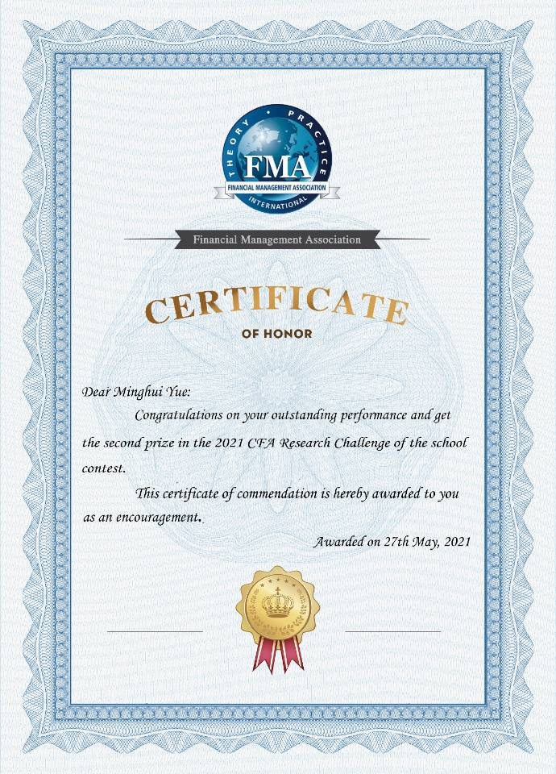
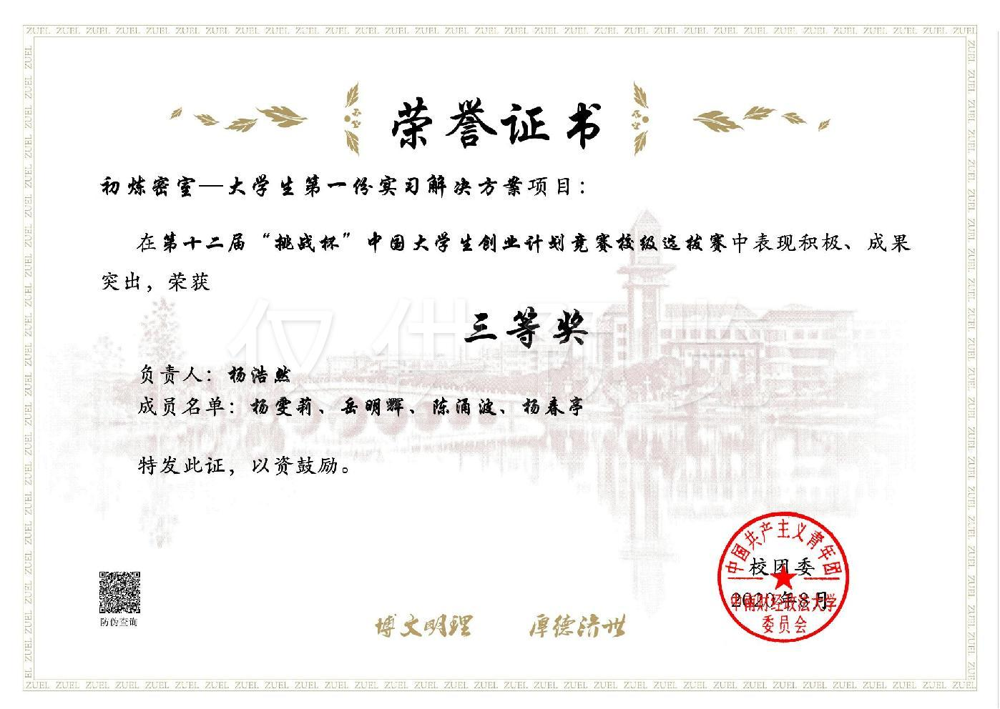
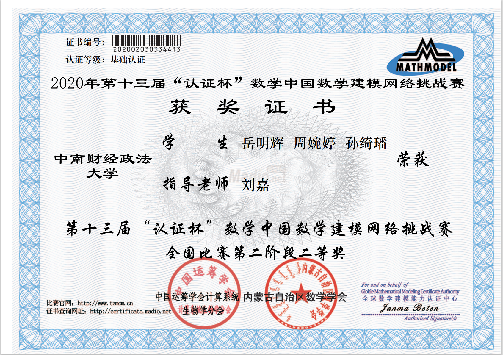

岳明辉的个人简介
曾经作品展示
|  |
CFA Research Challenge是由CFA官方协会主办的一项面向全球高等院校金融类专业的全英
文分析研究性竞赛项目，旨在为同学们提供财务分析、公司研究和股权投资方面的学习机会，
找到掌握股票研究和公司分析的最佳实践方法。CFA Research Challenge一共分为三个阶
段，分别是当地赛(Local)、区域赛(Regional)和全球赛(Global)。中国赛区分为四大赛
区，包括成都（中国中西部赛区）、北京（中国华北赛区）、上海（中国华东赛区）和广州
（中国华南赛区）。每个赛程包括Report和Presentation，各占50%权重。比赛中，参赛
选手需要通过团队合作来研究并分析一家指定的上市公司，通过对公司基本面的了解、尽职
调查、对公司财务分析和估值等方面的工作来完成一份研究报告，同时给出购买、出售或持
有的推荐方案。每支代表学校的参赛队伍都需要对研报进行现场展示和答辩，同时接受评委
的提问来详细介绍自己的分析结果。
2021年六月在本次比赛中获得二等奖 |
|  |
“挑战杯”中国大学生创业计划竞赛是由共青团中央、中国科协、教育部、全国学联主办的大学
生课外科技文化活动中一项具有导向性、示范性和群众性的创新创业竞赛活动，每两年举办一
届。根据参赛对象，分普通高校、职业院校两类。设科技创新和未来产业、乡村振兴和脱贫攻
坚、城市治理和社会服务、生态环保和可持续发展、文化创意和区域合作五个组别。竞赛宗旨
在与：培养创新意识、启迪创意思维、提升创造能力、造就创业人才。
2020年八月在本次比赛中获得二等奖 |
|  |
“认证杯”数学中国数学建模网络挑战赛,自2008年至今已举办了十届,是-一项全国性数学建
模活动,也是国内少有的面向对象如此广泛的数学建模赛事活动,覆盖面极广,参与人数众多,
为广大数学建模爱好者提供了一个良好的交流学习平台.此项赛事在高校学生中的关注度和
参与度非常高,也是建模圈中无人不知、无人不晓的建模活动.从历届参赛数据来看,每年有
众多国内知名高校比如浙江大学、大连理工大学、山东大学、北京化工大学、西南交通大学、
吉林大学、南京航空航天大学、南京理:工大学、河海大学、郑州大学、西北工业大学、兰
州大学等等的大学生、硕士研究生参与其中并取得优异成绩,也有很多高校对此项赛事活动
给予了大力支持,在其学校官网发布此项赛事的参赛通知及相关新闻报道,并积极组织学生参
赛,比如燕山大学、山东理工大学、浙江师范大学、安庆师范大学、北华航天工业学院等.
2022年五月在本次比赛中获得二等奖 |